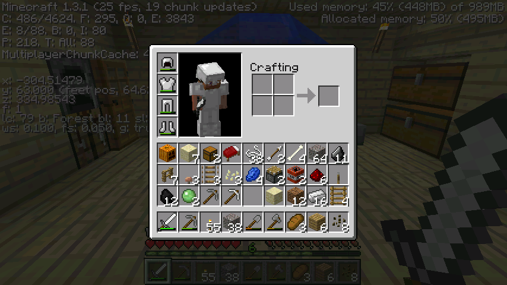

首页
上一页
7
8
9
10
11
12
12
13
14
15
16
17
下一页
末页
defanive2
无尽黑夜
14
遇到了一只洞穴蜘蛛，说明附近有刷怪笼
422楼
2012-08-06 02:58
defanive2
无尽黑夜
14
一到下面就看到了，马上插个火柴
接下来要清理全部的蜘蛛网，点亮全部地方
PS 蜘蛛网应该是用剪刀，不过剑也可以
423楼
2012-08-06 03:03
defanive2
无尽黑夜
14
洞穴蜘蛛刷怪笼
PS 洞穴蜘蛛可以在蜘蛛网里面自由移动，而主角不能，所以清理蜘蛛网是很必要的
PS PS 100m冲刺太激烈了啊，很想看决赛，不知道能不能顶到5点
424楼
2012-08-06 03:08
defanive2
无尽黑夜
14
近距离围观一只creeper
现在开了坐标往入口走准备回家
打算睡一会5点再起来看100米
425楼
2012-08-06 03:22
defanive2
无尽黑夜
14
我擦，史莱姆！RP简直爆炸了
之前想，不借助外部程序基本不可能找到史莱姆chunk了
除非分布得挖然后一个一个测试
现在就给我遇到了，马克下坐标
426楼
2012-08-06 03:30
defanive2
无尽黑夜
14
2个史莱姆球，哈哈
427楼
2012-08-06 03:30
defanive2
无尽黑夜
14
我擦出不去了。。找不到出口
我都记得这些路标，也有出口的坐标，但是就是找不到那条路。。
翻一下发上来的图片看一下再说
428楼
2012-08-06 03:34
defanive2
无尽黑夜
14
终于找到出口了，呼
跑回家之后就睡觉，然后到5点起来看100m
429楼
2012-08-06 03:36
defanive2
无尽黑夜
14
这次废弃矿洞之旅的收获，都是些杂乱无章的东西
比较重要的有，史莱姆球，西瓜种
其他的话，找到了史莱姆chunk，一个骷髅刷怪笼，一个洞穴蜘蛛刷怪笼
打算把骷髅刷怪笼做成经验塔，洞穴蜘蛛刷怪笼还没想法

430楼
2012-08-06 03:40
defanive2
无尽黑夜
14
把东西归类放好到了储物箱，保存退出MC
现在回复一下大家的帖子，一会就睡了
PS 估计也睡不了多久了，插耳机听歌算了
431楼
2012-08-06 03:43
defanive2
无尽黑夜
14
对了，关于地图种子
1.3里面做了一个改动，就是在F3的debug界面里面把服务器的地图种子给隐去了
目的是为了防止玩家得到种子之后，创建同种的单人游戏来进行地图透视之类的
而1.3里面，另一个改动是，单机模拟成了本地服务器，所以也是多人的特性
因此，地图种子就无法从F3里面获得了
我一开始创建游戏的时候就没有指定种子，所以我自己都不知道种子是什么
PS 第三方程序应该可以获得种子，通过分析level.dat文件，不过我个人还没听说过类似的软件
432楼
2012-08-06 03:54
defanive2
无尽黑夜
14
再PS一个，直播器实在是太好用了，把一些细节优化了之后用起来更爽了
按F2然后就弹出界面，输入完文字就把帖子发出来了
IE都不用开（其实内置有IE的框架），玩MC也没这么卡了
好了睡觉去了，大家晚安，8，5点再起来看奥运
433楼
2012-08-06 03:57
defanive2
无尽黑夜
14
话说单机里面多了些指令，还没关注
知道了有/seed指令，单机也还是可以知道种子的
我的种子是897044936534719397
448楼
2012-08-06 18:12
defanive2
无尽黑夜
14
今天下午的时候决定在创造里面研究一下地铁
地铁嘛肯定是在地下的，我的打算是在生存里面把地铁站建在y=50左右
453楼
2012-08-06 18:22
defanive2
无尽黑夜
14
全景，只做了2方向，不过对于我生存的地铁两方向也足够了
可以很简单的拓展成3方向
454楼
2012-08-06 18:30
defanive2
无尽黑夜
14
这个是内景
中间是当前的站名，两边是目的方向，左边的就是往左走，右边的就是往右走
因此从左边进站的车会出现在右边，乘车人如果决定继续走就不需要下车直接按按钮就继续走了
455楼
2012-08-06 18:39
defanive2
无尽黑夜
14
左侧出发口的近景，放上矿车之后按按钮就可以出发了
这里只有单格的铁轨，而且两边都被堵住，因此矿车不会被主角推动而意外启动
456楼
2012-08-06 18:49
defanive2
无尽黑夜
14
这里是我的设计比较得意的地方
前方的两个木板由两个活塞拉开，然后加速铁轨被推出并且点亮，矿车加速出发
随后，又逆序先把加速铁轨收回，再关上木板活塞门
457楼
2012-08-06 18:55
defanive2
无尽黑夜
14
左侧的出发口
出发之后一直被加速并进入直道，开向下一个车站
至于右转是从左侧方向进站时的入口
458楼
2012-08-06 18:59
defanive2
无尽黑夜
14
从左侧进站时的情况
到了这里进站车辆会往左转，而出站车辆则会保持继续直线前行
460楼
2012-08-06 19:12
defanive2
无尽黑夜
14
现在网速慢爆了连图片都要传半天还不一定能传上来。。
进站车辆左转之后来到的是直道，继续前行就是进站的汇合点，左侧和右侧的进站都会在这里分配到正确的站内位置
462楼
2012-08-06 19:19
defanive2
无尽黑夜
14
网速实在太慢了，什么也发不上来，决定不直播了。。晚点网速好了再来。。PS 白天下种子的人自重。。
463楼
2012-08-06 19:30
defanive2
无尽黑夜
14
网速大概好点了。。这里是汇合点，左侧和右侧的进站车辆都在这里上去
464楼
2012-08-06 19:53
defanive2
无尽黑夜
14
这里就是矿车的分配了，中间的铁轨会根据进站方向调整
从左边进站就会转到右边，右边进站就会到左边
466楼
2012-08-06 20:04
defanive2
无尽黑夜
14
这里就是出口的地方
激活了铁轨之后前方的木板就会被活塞缩起来，矿车掉下去
PS 最前面的活塞不是控制木板的，是控制下面出站的活塞门
467楼
2012-08-06 20:19
defanive2
无尽黑夜
14
这里就是出口的地方
激活了铁轨之后前方的木板就会被活塞缩起来，矿车掉下去
PS 最前面的活塞不是控制木板的，是控制下面出站的活塞门
469楼
2012-08-06 20:25
defanive2
无尽黑夜
14
具体就是这样了，非常舒服的车站，操作起来非常方便
也可以进行空车运输
一个车站需要6个粘性活塞，也就是6个史莱姆球
其他资源包括铁轨，加速铁轨，压力铁轨等
总之大部分来说资源鸭梨都不大
473楼
2012-08-06 20:29
defanive2
无尽黑夜
14
好了，继续回到1.3的生存模式
现在要做什么呢？
昨天才探险完矿洞，今天肯定是带上箱子，带上工具，去采集资源
474楼
2012-08-06 20:41
defanive2
无尽黑夜
14
大家怎么都这么关注直播器。。整个程序都还是半成品，暂时还不发了，等有时间完善一下，一定发出来
475楼
2012-08-06 20:47
defanive2
无尽黑夜
14
带上这些装备，感觉足够了，出发去矿洞
其实里面的木板是很不错的资源，不用砍树了
个人有强迫症，喜欢保持自然的原貌，每次砍树都要头疼一番
这下子可以满足资源需求了
477楼
2012-08-06 20:50
首页
上一页
7
8
9
10
11
12
12
13
14
15
16
17
下一页
末页